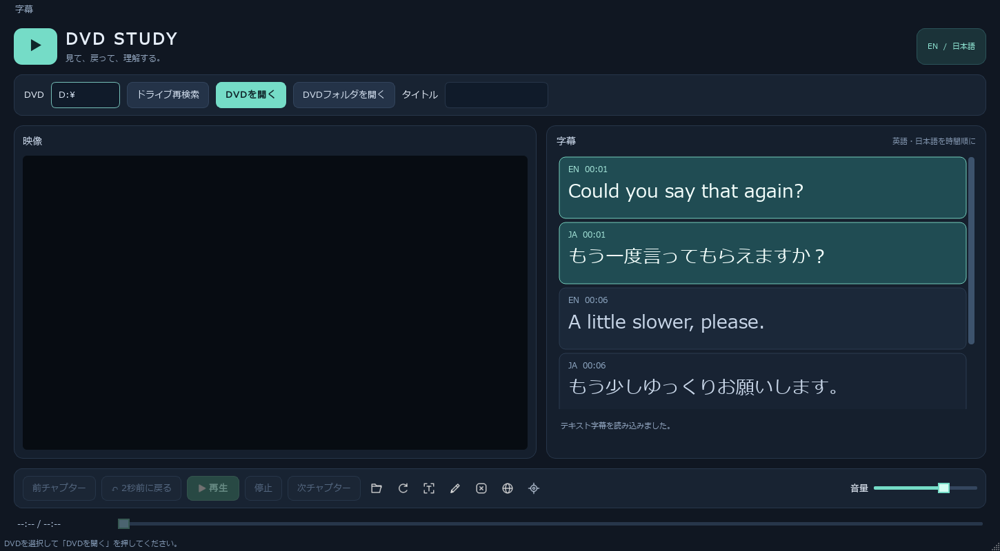

英語学習用DVDプレイヤー
動画を見ながら、英語・日本語の字幕を切り替えて学習するデスクトップアプリケーション。
作成日：2026年11月7日 ／ 開発言語：Python ／ 対象OS：Windows ／ 状態：実装・実機確認中
1. 目的・対象範囲
Windows上でDVDを再生し、左の映像と右の英語・日本語字幕を比較して英語学習に使う。DVDドライブとVIDEO_TSフォルダ、タイトル・章移動、2秒戻し、画像字幕の自動抽出、SRT文字字幕、外部Subtitle Edit連携を対象とする。英日字幕はタブ切替から統合一覧へ変更した。
DVDメニュー、ISO・一般動画、翻訳生成、音声認識、学習履歴、区間リピート、速度変更、実行ファイル配布は初版対象外。
2. 画面構成
初期1450×800、最小1100×600。左右の分割領域の初期指定は760：640で、利用者が幅を調整できる。左に映像、右に英語・日本語を時刻順にまとめた1つの字幕一覧を配置する。各行に言語・開始時刻・画像または文字を表示し、両言語の現在行を強調する。画像は最大約64px高、文字は最低20pt。上部の「字幕」メニューで各言語のトラックを選び、一覧で選択した言語をSRT読込・OCR操作の対象とする。言語の選択やトラック変更で再生位置・再生状態を変えない。
濃紺とミントの配色、映像・字幕カード、下部の再生操作・字幕操作・音量をまとめたバーを使用する。操作アイコンは30×30pxで、説明をツールチップとアクセシブル名に設定する。手動スクロールで追従を停止し、「現在の字幕へ」で再開する。

3. 機能仕様
| ID | 機能 | 期待する動作 |
|---|---|---|
| F-01 | DVD読み込み | 選択した対象を読み込み、成功後は再生待機状態とする。対象の変更時は古い字幕と再生状態を解除する。 |
| F-02 | 再生・一時停止 | 同じ操作から状態を切り替える。未読み込み時は操作を無効にする。 |
| F-03 | 停止 | 再生を停止し、現在タイトルの先頭に戻す。再生終了時も停止状態にする。 |
| F-04 | シーク | バー操作で再生位置を変更し、字幕の現在行も更新する。位置変更ができない媒体では無効表示とする。 |
| F-05 | 音量 | 0～100%で変更できる。0%は無音。起動時の初期値は70%とする。 |
| F-06 | 言語切り替え | 英日統合一覧を表示し、上部の字幕メニューで言語ごとのトラックを切り替える。一覧の選択言語はSRT・OCR操作の対象とし、初期値は英語。動画の再生位置・状態は維持する。 |
| F-07 | 字幕同期 | 再生時刻に対応する行を強調し、その行が見える位置まで自動スクロールする。利用者の手動スクロール中は追従を止め、「現在の字幕へ」操作で復帰する。 |
| F-08 | エラー案内 | ドライブなし、対象なし、非対応媒体、字幕なし、読み込み・再生失敗を区別して表示し、再選択できるようにする。 |
| F-09 | 2秒前に戻る | 現在の再生位置から2秒前へ移動する。開始から2秒未満の場合は先頭（0秒）へ戻す。再生中は再生を継続し、一時停止中は一時停止を維持する。字幕の現在行も更新する。連続クリックでは、その都度2秒ずつ戻る。未読み込み時・読み込み中・位置変更ができない媒体では操作を無効にする。 |
| F-10 | タイトル・チャプター選択 | タイトルを選択してその先頭で再生待機する。切り替え時は字幕も対象タイトルへ更新する。前後チャプターへ移動し、再生／一時停止状態を維持する。移動先がない場合は操作を無効にする。 |
字幕行クリックによる再生位置の移動は追加候補とし、初版の必須条件には含めない。
4. 字幕の取り扱い
表示ルール
- 英語・日本語の字幕を1つの一覧へ時刻順に並べ、開始時刻と字幕内容を表示する。DVDの画像字幕は読みやすい大きさに拡縮して表示する。
- 字幕の開始時刻以上、終了時刻未満を現在字幕とする。重なる字幕は対象行をすべて強調する。
- 字幕のない区間では現在行の強調を解除する。映像の再生は継続する。
- 対象言語の字幕が存在しない場合は、「この言語の字幕はありません」と案内する。
- 両言語が存在しない場合は字幕エリアに案内を出し、動画のみ再生可能とする。
- 右側を主な字幕表示領域とし、動画への字幕重ね表示は初期状態では行わない。
内部データの論理構造
字幕1件を「言語、開始時刻、終了時刻、表示内容（文字列または画像参照）」として扱う。DVDからの取得・変換と、画面への表示を分離する。必要な場合はローカルのキャッシュに時刻・言語のJSONと字幕画像を保存する。キャッシュは媒体・タイトル・字幕トラックを識別して分け、別エピソードの字幕を混在させない。キャッシュはGit管理対象外とする。
外部SRTの読み込み・再読み込みとSubtitle Editへの画像字幕書き出し・起動に対応する。OCRは外部ツールで手動実行し、SRT保存後にプレイヤーへ読み込む。翻訳生成は対象外とする。
5. 基本操作と状態遷移
- 起動すると、動画エリアにDVD選択の案内を表示する。
- 利用者がDVDを選択する。読み込み中は重複操作を防止する。
- 成功すると再生待機状態になり、時間・字幕の利用可否を表示する。
- 再生ボタンで映像と音声を再生し、英語字幕を同期表示する。
- 日本語の行を選択してSRT・OCR操作の対象とする。英語・日本語は同じ再生位置で同時に同期する。
- 聞き直したい場合は「2秒前に戻る」を押す。一時停止・シーク・停止も必要に応じて操作する。
- 終了時は再生を止め、ドライブや再生エンジンの資源を解放する。
状態：未読み込み → 読み込み中 → 再生待機 ⇄ 再生中 ⇄ 一時停止。停止は再生待機へ移行。読み込み失敗は対象を再選択できる状態に戻す。再生失敗時は再生を止め、理由を案内する。
6. 品質要件・実装構成
- 開発言語はPython、対象OSはWindows。GUIはPySide6、再生はVLC＋python-vlcを採用する。初版はPython仮想環境から起動し、VLCは別途インストールする。実行ファイル化は初版の対象外とする。
- 画面、再生制御、字幕取得・同期を分離し、技術検証の結果に応じて差し替えられる構成とする。
- 読み込みなどの処理中も画面が操作不能にならないようにする。
- 字幕同期の暫定目標は再生時刻との差±300ms以内。対象機器と媒体を決めて評価し、必要に応じて見直す。
- 字幕メニューと主要な再生操作はキーボードで到達できるようにする。現在字幕は色と枠・文字の強調で識別する。
- 初版ではアカウント、サーバー、データベースを必須にしない。映像・字幕の外部送信は機能に含めない。
- エラーログへ映像・字幕の本文や秘密情報を不用意に残さない。GitSecurityToolによるコミット前検査を継続する。
初版はタイトル選択と前後のチャプター移動に対応する。DVDメニュー、ISO・一般動画ファイルの読み込みは対象外とする。リージョン・保護等の条件による再生可否は実機で確認し、未検証の対応を保証しない。
7. 受入条件（検証目標）
Windows上でVLC＋python-vlcと手持ちのドラマDVDを用いて検証する。字幕あり／片言語のみ／字幕なしのケースを用意する。
| ID | 確認内容 | 合格条件 |
|---|---|---|
| A-01 | 起動・配置 | 動画が左、字幕が右に表示され、英日統合一覧の言語表示を識別できる。 |
| A-02 | DVD再生 | 対象DVDの映像・音声を再生でき、一時停止と再開ができる。 |
| A-03 | 言語切り替え | 両言語がある媒体で選択した各言語のトラックが統合一覧に表示され、再生位置・再生状態が維持される。 |
| A-04 | 同期・シーク | 通常再生と位置変更後に対応字幕が強調され、暫定同期目標を満たす。 |
| A-05 | 字幕不足 | 片言語または両言語の字幕がない場合、案内を表示し、動画は再生できる。 |
| A-06 | 異常系 | DVDなし・非対応媒体・読み込み失敗で終了せず、原因を表示して再選択できる。 |
| A-07 | 停止・音量・終了 | 停止で先頭に戻り、音量が反映され、アプリ終了後に媒体の利用が解放される。 |
| A-08 | 操作性 | 主要操作にキーボードで到達でき、手動スクロール後に現在字幕への追従を再開できる。 |
| A-09 | 2秒前に戻る | 10秒位置で押すと8秒位置へ、1秒位置では0秒へ移動する。連続操作で2秒ずつ戻り、0秒より前へは移動しない。再生／一時停止状態を維持し、移動後の字幕が同期する。未読み込み時・読み込み中・位置変更不可の媒体では操作できない。 |
| A-10 | タイトル・チャプター | 選択したタイトルの映像と字幕が一致する。前後チャプターへ移動して字幕が同期し、移動先がない場合は操作できない。 |
8. 実装・検証状況
更新日：2026年11月7日。実装済みの機能と受入目標を区別する。過去の記録では自動テスト55件成功。今回の文書修正では再実行していない。実DVDタイトル2の全編字幕抽出（英語302件・日本語299件・別日本語0件）、再生・停止・章移動・現在行強調を確認済み。同期誤差±300msの精密測定、物理取り出し・再挿入、音量の聴感、全編連続再生、外部OCRからSRT読込までの実機試験は未完了。実機確認結果と連携手順を参照。
受入条件は目標であり、全項目の合格を示さない。FFmpeg dvdvideoで直接抽出できない媒体は、利用可能なDVDフォルダまたは検証済み字幕JSON・SRTを代替入力とする。抽出処理は中止・再取得でき、途中結果の表示・保存・再利用、言語不明トラックの手動割り当てに対応する。
字幕の既定保存先はプロジェクトルートのsubtittle/<DVD名>/<DVD識別子のSHA-256>/title-XX/。title-XXは1始まり、内部title_idは0始まり。DVD名はファイル名として安全な文字へ変換し、媒体IDはIFO情報から計算する。トラック別の<track_id>/manifest.jsonとimages/、タイトル別のlanguage_map.json、subtitles.en.srt・subtitles.ja.srt、ocr/を保持する。
DVD_PLAYER_DATA_DIR指定時は、その配下のsubtittle/とlogs/を使う。未指定時のログは%LOCALAPPDATA%/dvd_player/logs/。ログは2MiB・バックアップ3世代。字幕保存の上限は既定512MiBで、容量管理と破損データの無効化を行う。字幕・OCR出力はGit管理外とする。
manifestのschema_versionは1。media_id、title_id、language（en/ja）、track_id、complete、coverage、cuesを持つ。各cueはcue_id、start_ms、end_msとimage_pathまたはtextを持つ。0 ≤ start_ms < end_ms、cue_id重複禁止、画像の外部パス参照禁止。画像字幕と文字字幕を別トラックとして保持し、SRTの再読込で同じ言語の文字トラックを更新する。JSONは一時書込後に置換し、取得済み範囲が短くなる途中結果は採用しない。保存に失敗しても可能な範囲で現在の字幕表示を継続する。
追加仕様：Subtitle Edit連携
SRTを現在のDVDタイトルと英語／日本語へ対応付けて読み込み、時刻付きテキスト一覧として表示する。読み込み・再読み込みで再生位置と再生状態を維持する。各言語のテキストは保存して再利用し、再読み込みでは同じ言語のテキストトラックを更新する。画像トラックは保持する。
選択した画像字幕はBDN XML＋PNGへ書き出してSubtitle Editを起動する。既存の実行ファイル、環境変数、プロジェクト内ポータブル版を利用可能。OCR・誤認識修正・SRT保存は外部ツールで手動実行する。書き出しは新規フォルダへ行い、既存ファイルを上書きしない。
BDN XMLの25fps時刻への変換で通常最大約20msの丸めが発生する。SRT単体の再編集ではミリ秒を維持する。自動OCR・編集保存の自動検知は今回の対象外。詳細は連携手順を参照。